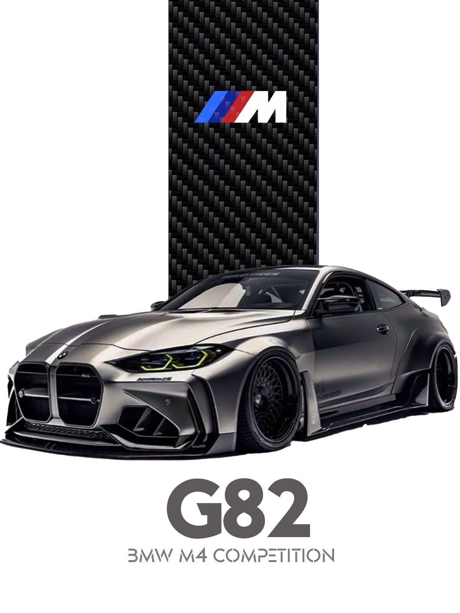

BMW M4 is a high-performance M series sports coupe produced by BMW.
The latest generation (G82) is known for its powerful engine, aggressive design, and track performance.
Below are the common specs for M4 / M4 Competition.
Engine & Performance
Engine: 3.0L Twin-Turbo inline-6 (S58)
Power
Standard M4 → ~473 hp
M4 Competition → ~503 hp
Competition xDrive → ~523-530 hp
Torque: ~550-650 Nm
0-100 km/h: 3.5 - 4.2 seconds
Top speed: 307 km/h (up to 330 km/h with package)
Transmission: 6-speed manual / 8-speed automatic
Drivetrain: Rear-wheel drive or xDrive AWD
Key Features
M Sport suspension
Adaptive dampers
Launch control
Drift mode (xDrive models)
Carbon fiber roof (optional)
Harman Kardon / Bowers & Wilkins sound system
Digital cluster + iDrive display
M sport seats